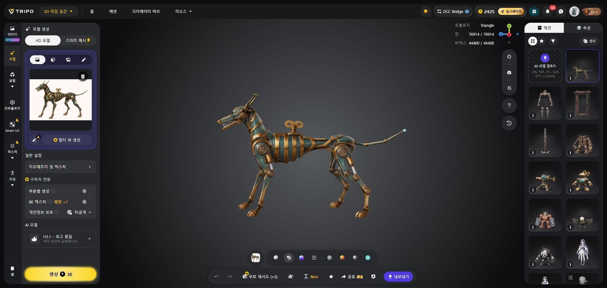
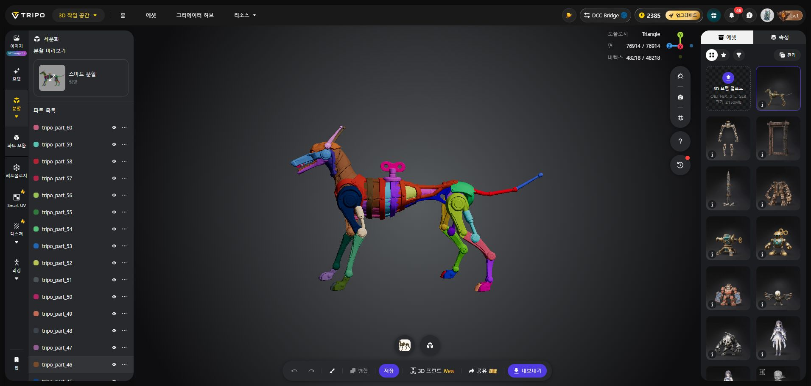

WITCH / AUTOMATION / 2026.11.05
자동화 소환체
세 종의 원화와 첫 수렵견 모델
낡은 황동과 깊은 청록. 신호등만 호박색으로 구분했습니다.
3종 원화수렵견 Tripo 생성60개 내보낸 파트리깅 전 원형
기계 수렵견 · 생성 모델
다음 작업: 관절별 묶기와 안쪽 면·피스톤 정리 → 크기와 정면 맞춤 → 5~7천 삼각형·1K 재질 → 강체 리깅과 모션. 현재 게임에는 연결하지 않았습니다.
원본 보존과 검증 범위
| 단계 | 메시 | 삼각형 | 검사 오류 |
|---|
| 생성 직후 원본 | 1 | 76,914 | 2 |
| 분할 GLB 원본 | 60 | 76,870 | 8 |
| 최소 정리 작업본 | 60 | 76,862 | 0 |
Tripo 분할 직후 화면에는 61개였으나 저장·내보낸 GLB는 60개입니다. 11번 파트가 없고 면 수도 달라져, 원본의 정확한 면 분할이라고 간주하지 않습니다. 원본과 분할 다운로드 파일은 각각 보존했습니다.
작업본은 남은 위치·면 연결·UV·부품 변환·재질을 유지합니다. UV/노멀 경계의 분리 정점과 숨겨진 접합면 경고 64개는 원형 단계에서 유지합니다. 실제 관절 접촉·폐곡면·게임 크기·성능 검사는 이후 단계입니다.
검증 결과 · 작업본 QA · GLB 재임포트 QA · 파일 해시
Tripo 생성·분할 화면
생성 결과와 정밀 분할 직후의 실제 작업 화면입니다.

